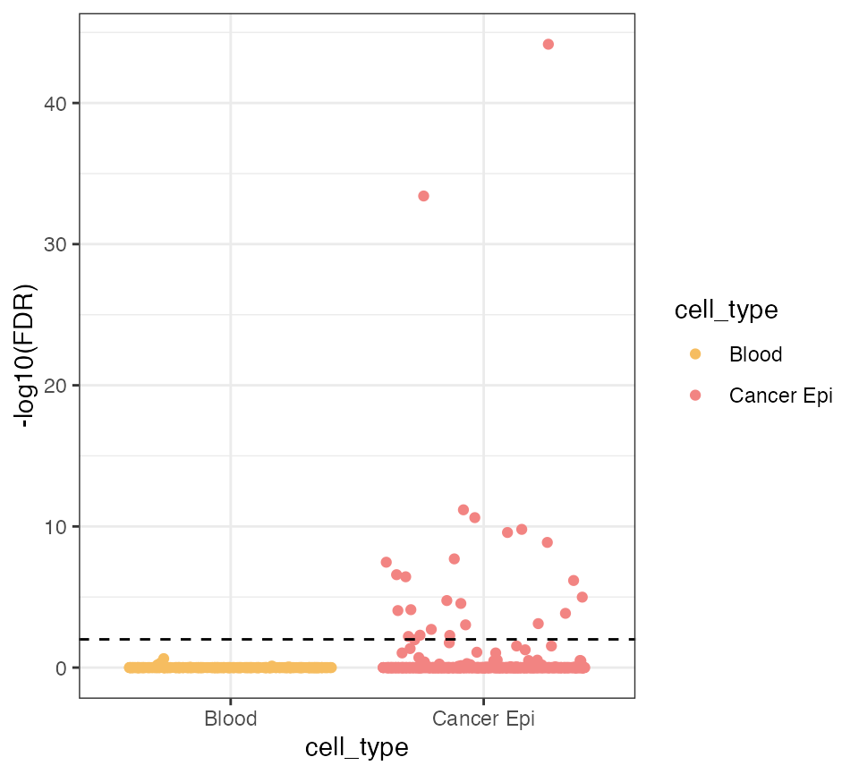

scMitoMut demo: CRC dataset
Wenjie Sun
Analysis_colon_cancer_dataset.RmdInstall package:
BiocManager::install("scMitoMut")Load packages:
Overview
Key functions
Key functions used in the scMitoMut package:
-
parse_mgatk(): Parses the mgatk output and saves the result in an H5 file. -
open_h5_file(): Opens the H5 file and returns a “mtmutObj” object. -
subset_cell(): Subsets the cells in the mtmutObj object. -
run_model_fit(): Runs the model fitting and saves the results in the H5 file. -
mut_filter(): Filters the mutations based on specific criteria. -
plot_heatmap(): Plots a heatmap with different types of data, including p-values, allele frequencies, or binary mutation status. -
export_df(),export_af(),export_pval(), andexport_binary(): Export the mutation data in various formats.
Key conceptions
- Somatic mutation: a mutation that occurs in a cell or a cell population, but not in the germline.
- AF or VAF: allele frequency or variant allele frequency. It is the ratio of the number of reads supporting the variant allele to the total number of reads.
- p-value: the probability of observing a test statistic at least as extreme as the one that was observed, assuming that the null hypothesis is correct.
IMPORTANT: In this vignette, I will use the term “mutation” to refer to the somatic mutation. For the somatic mutation, I use the dominant allele detected as the reference allele. And if the reference allele frequency is significant (FDR < 0.05) lowe, I will call the locus a mutation.
Background
Single-cell genomics technology provides a powerful tool for understanding cellular heterogeneity and diversity within complex tissues.
Mitochondrial DNA (mtDNA) is small, without chromatin, and has multiple copies within a cell. Those features help us to get good mtDNA sequencing depth in single-cell ATAC seq data, which facilitates somatic mutation detections.
Together with chromatin openness data, mitochondrial somatic mutation can be used as a lineage label for helping us understand cellular differentiation, oncogenesis and development.
In this vignette, the scMitoMut package is used to identify and visualize mtDNA single nucleic somatic mutations.
In the following analysis, scMitoMut was used to analyze the allele count data, which is the output of mgatk. The only few loci have been selected for the demonstration purpose to reduce the file size and the run time.
The full demostration can be found XXX, which shows the analysis begins with mgatk and CellRanger output.
Loading data
We load the allele count table with the parse_table
function. The allele count table consists with following columns:
-
loc: the locus name -
cell_barcode: the cell barcode of the cell -
fwd_depth: the forward read count of the allele -
rev_depth: the reverse read count of the allele -
alt: the allele name -
coverage: the total read count of the locus -
ref: the reference allele name
Instead of using the table above as input, the output from the
mgatk also can be read in directly using the
parse_mgatk function.
Using the parse_table function or
parse_mgatk function, the allele count data are transformed
into an H5 file. The H5 file works as a
database, which does not occupy the memory, and data can be accessed by
querying. It helps for better memory usage and faster loading.
The process may take some minutes. The return value is the
H5 file path.
## Load the allele count table
f <- system.file("extdata", "mini_dataset.tsv.gz", package = "scMitoMut")
f_h5_tmp <- tempfile(fileext = ".h5")
f_h5 <- parse_table(f, h5_file = f_h5_tmp)
f_h5## [1] "/var/folders/46/vh_b6qzs5kzgdhvx1kcn7hyh0000gn/T//RtmpqTYBud/file18985cd45930.h5"Once we have the H5 file, we can use
open_h5_file function to load it and get an object named
“mtmutObj”.
Detail: On this step, the mtmutObj has
6 slots - h5f is the H5 file handle -
mut_table is the allele count table - loc_list
is a list of available loci - loc_selected is the selected
loci - cell_list is a list of available cell ids -
cell_selected is the selected cell ids
## Open the h5 file as a scMitoMut object
x <- open_h5_file(f_h5)
str(x)## List of 9
## $ file : chr "/var/folders/46/vh_b6qzs5kzgdhvx1kcn7hyh0000gn/T//RtmpqTYBud/file18985cd45930.h5"
## $ h5f :Formal class 'H5IdComponent' [package "rhdf5"] with 2 slots
## .. ..@ ID : chr "72057594037927938"
## .. ..@ native: logi FALSE
## $ mut_table :Formal class 'H5IdComponent' [package "rhdf5"] with 2 slots
## .. ..@ ID : chr "144115188075855873"
## .. ..@ native: logi FALSE
## $ loc_list : chr [1:16(1d)] "chrM.200" "chrM.204" "chrM.310" "chrM.824" ...
## $ loc_selected : chr [1:16(1d)] "chrM.200" "chrM.204" "chrM.310" "chrM.824" ...
## $ cell_list : chr [1:1359(1d)] "AAACGAAAGAACCCGA-1" "AAACGAAAGTACCTCA-1" "AAACGAACAGAAAGAG-1" "AAACGAAGTGGTCGAA-1" ...
## $ cell_selected: chr [1:1359(1d)] "AAACGAAAGAACCCGA-1" "AAACGAAAGTACCTCA-1" "AAACGAACAGAAAGAG-1" "AAACGAAGTGGTCGAA-1" ...
## $ loc_pass : NULL
## $ loc_filter :List of 4
## ..$ min_cell : num 1
## ..$ model : chr "bb"
## ..$ p_threshold : num 0.05
## ..$ p_adj_method: chr "fdr"
## - attr(*, "class")= chr "mtmutObj"
## Show what's in the h5 file
h5ls(x$h5f, recursive = FALSE)## group name otype dclass dim
## 0 / cell_list H5I_DATASET STRING 1359
## 1 / cell_selected H5I_DATASET STRING 1359
## 2 / loc_list H5I_DATASET STRING 16
## 3 / loc_selected H5I_DATASET STRING 16
## 4 / mut_table H5I_GROUPSelecting cells
We are only interested in annotated good-quality cells.
So we will select the cells with annotation, which are good quality cells.
f <- system.file("extdata", "mini_dataset_cell_ann.csv", package = "scMitoMut")
cell_ann <- read.csv(f, row.names = 1)
## Subset the cells, the cell id can be found by colnames() for the Seurat object
x <- subset_cell(x, rownames(cell_ann))After subsetting the cells, the cell_selected slot will
be updated. Only the selected cells will be used in the following
p-value calculation.
head(x$cell_selected)## [1] "AAACGAAAGAACCCGA-1" "AAACGAAAGTACCTCA-1" "AAACGAACAGAAAGAG-1"
## [4] "AAACGAAGTGGTCGAA-1" "AAACGAATCAATCGTG-1" "AAACGAATCCCACGGA-1"Similarly, we can select loci by using the subset_locus
function. It saves time when we only focus on a few loci.
Calculating mutation p-value
Assuming an mtDNA locus’s majority base has constant allele frequency in cells, the allele frequency mutation was caused by sequencing error or sampling. Based on that assumption, we build a null hypothesis that there are no mutations for that locus in the cell. Then we fit the allele frequency distribution and calculate the probability of observing allele frequency for a specific locus in a cell. If the probability is small, we can reject the null hypothesis and conclude that there is a mutation for that locus in the cell.
To calculate the probability value (p-value), we run
run_calling function, which has 2 arguments: -
mtmutObj is the scMitoMut object -
mc.cores is the number of CPU threads to be used
The process will take some time. The output will be stored in the
pval group of the H5 file. The result is
stored in the hard drive, instead of in memory. We don’t need to re-run
the mutation calling when loading the H5 file next
time.
The mutation calling is based on beta-binomial distribution. The mutation p-value is the probability that with the null hypothesis: there are no mutations for that locus in the cell.
Detail: For a specific locus, we calculate the p-value using the following steps. 1. Defining the wild-type allele as the allele with the highest average AF among cells. 2. Fitting a 2 components binomial-mixture model to the AF of the wild-type allele for all cells. Using the model, we define the wild-type cells if it has a probability >= 0.001 to be the wild type. 3. Using those wild-type cells, we fit the beta-binomial model. 4. At last, based on the model, we calculate the p-value of observing the AF of the wild-type allele in the cell.
## Run the model fitting
run_model_fit(x, mc.cores = 1)## [1] "chrM.200"
## [1] "chrM.204"
## [1] "chrM.310"
## [1] "chrM.824"
## [1] "chrM.1000"
## [1] "chrM.1001"
## [1] "chrM.1227"
## [1] "chrM.2285"
## [1] "chrM.6081"
## [1] "chrM.9429"
## [1] "chrM.9728"
## [1] "chrM.9804"
## [1] "chrM.9840"
## [1] "chrM.12889"
## [1] "chrM.16093"
## [1] "chrM.16147"## used (Mb) gc trigger (Mb) limit (Mb) max used (Mb)
## Ncells 1166717 62.4 2296245 122.7 NA 2296245 122.7
## Vcells 2225694 17.0 8388608 64.0 16384 6295545 48.1
## The p-value is kept in the pval group of H5 file
h5ls(x$h5f, recursive = FALSE)## group name otype dclass dim
## 0 / cell_list H5I_DATASET STRING 1359
## 1 / cell_selected H5I_DATASET STRING 1359
## 2 / loc_list H5I_DATASET STRING 16
## 3 / loc_selected H5I_DATASET STRING 16
## 4 / model_par_bb H5I_DATASET COMPOUND 16
## 5 / model_par_bm H5I_DATASET COMPOUND 16
## 6 / mut_table H5I_GROUP
## 7 / pval H5I_GROUPFilter mutations
Then we will filter the mutations by using the
mut_filter function with the following criteria: - The
mutation has at least 5 cells mutant. - The FDR-adjusted p-value is less
than 0.05.
The output is a data.frame with 2 columns -
loc is the locus - mut_cell_n is the cell
number
We can see that there are 12 loci after filtering.
Detail: The mut_filter function has 4
arguments: - mtmutObj is the mtmutObj object -
min_cell is the minimum number of mutant cells -
p_adj_method is the method used to adjust the p-value. -
p_threshold is the adjusted p-value threshold
## Filter mutation
x <- filter_loc(
mtmutObj = x,
min_cell = 2,
model = "bb",
p_threshold = 0.01,
p_adj_method = "fdr"
)
x$loc_pass## [1] "chrM.200" "chrM.204" "chrM.310" "chrM.824" "chrM.1227"
## [6] "chrM.2285" "chrM.6081" "chrM.9429" "chrM.9728" "chrM.9804"
## [11] "chrM.9840" "chrM.12889" "chrM.16093" "chrM.16147"Visualization
We will visualize the mutation by heatmap using the
plot_heatmap function. It can draw a heatmap of p-value,
AF, or binarized mutation status. Its input is the mtmutObj
object. It will independently apply all the filters we used in the
mut_filter function, and select the cells and loci that
pass the filter criteria. In all kinds of figures, the mutation status
will be calculated, and the loci and cells are ordered by the mutation
status.
Detail: The plot_heatmap arguments. -
mtmutObj is the scMitoMut object -
pos_list is the list of loci - cell_ann is the
cell annotation - ann_colors is the color of the cell
annotation - type is the type of the heatmap which can be
p, af, or binary -
p_adj_method is the method used to adjust the p-value -
p_threshold is the adjusted p-value threshold to determine
if a cell has mutation when selecting the cells and loci -
min_cell_n is the minimum number of cells that have
mutation when selecting the cells and loci - p_binary is
the adjusted p-value threshold to get the binary mutation status -
percent_interp is the percentage overlap threshold between
mutations, to determine if two mutations are correlated for
interpolating the mutation status - n_interp is the number
of overlapped cells to determine if two mutations are correlated for
interpolating
The interpolation is based on the assumption that the mutation are unique, it is rare to have two mutation in the same population. Therefore, when two mutations are correlated, one of them is likely a subclone of the other one.
Binary heatmap
The binary heatmap will show the mutation status of each cell for each locus. The red means mutant, the blue means no mutant, and the grey means the missing value.
For the mutation status, if two mutations are correlated, we set the high-frequency locus will get the mutant status from the low-frequency one. The correlation is determined by the percentage and number of cells overlapping between the two mutations.
## Prepare the color for cell annotation
colors <- c(
"Cancer Epi" = "#f28482",
Blood = "#f6bd60"
)
ann_colors <- list("SeuratCellTypes" = colors)
## binary heatmap
plot_heatmap(x,
cell_ann = cell_ann, ann_colors = ann_colors, type = "binary",
percent_interp = 0.2, n_interp = 3
)Also we can turn off the interpolation by setting
percent_interp = 1.
## binary heatmap
plot_heatmap(x,
cell_ann = cell_ann, ann_colors = ann_colors, type = "binary",
percent_interp = 1, n_interp = 3
)P value heatmap
The p-value heatmap shows the adjusted p-value of each cell for each locus. The order of the cells and loci is determined by the mutation status.
## p value heatmap
plot_heatmap(x,
cell_ann = cell_ann, ann_colors = ann_colors, type = "p",
percent_interp = 0.2, n_interp = 3
)AF heatmap
The AF heatmap will show the AF of each cell for each locus. Similar to the p-value heatmap, the order of the cells and loci are determined by the mutation status.
## allele frequency heatmap
plot_heatmap(x,
cell_ann = cell_ann, ann_colors = ann_colors, type = "af",
percent_interp = 0.2, n_interp = 3
)Exporting mutation data
We can export the mutation data by using the following functions:
-
export_dfexport the mutation data as adata.frame -
export_afexport the AF data as adata.matrixwith loci as row names and cells as column names. -
export_pvalexport the p-value data as adata.matrixwith loci as row names and cells as column names. -
export_binaryexport the mutation status data as adata.matrixwith loci as row names and cells as column names.
Those functions have the same filtering options as the
plot_heatmap function.
## Export the mutation data as data.frame
m_df <- export_df(x)
m_df[1:10, ]## loc cell_barcode alt_depth fwd_depth rev_depth coverage pval
## 1 chrM.1227 AAACGAAAGAACCCGA-1 90 48 42 91 1
## 2 chrM.1227 AAACGAAAGTACCTCA-1 49 23 26 49 1
## 3 chrM.1227 AAACGAACAGAAAGAG-1 60 25 35 60 1
## 4 chrM.1227 AAACGAAGTGGTCGAA-1 52 25 27 52 1
## 5 chrM.1227 AAACTCGAGGTCGGTA-1 25 15 10 25 1
## 6 chrM.1227 AAACTCGCAGTGGTCC-1 36 21 15 37 1
## 7 chrM.1227 AAACTCGTCGGGCTCA-1 49 24 25 49 1
## 8 chrM.1227 AAACTGCGTGAGGGTT-1 54 27 27 54 1
## 9 chrM.1227 AAAGATGAGTCGCCTG-1 77 32 45 77 1
## 10 chrM.1227 AAAGATGCAGGAGCAT-1 27 15 12 27 1
## af mut_status
## 1 0.989011 FALSE
## 2 1.000000 FALSE
## 3 1.000000 FALSE
## 4 1.000000 FALSE
## 5 1.000000 FALSE
## 6 0.972973 FALSE
## 7 1.000000 FALSE
## 8 1.000000 FALSE
## 9 1.000000 FALSE
## 10 1.000000 FALSE
## Export allele frequency data as data.matrix
export_af(x)[1:5, 1:5]## AAACGAAAGAACCCGA-1 AAACGAAAGTACCTCA-1 AAACGAACAGAAAGAG-1
## chrM.1227 0.9890110 1 1
## chrM.12889 0.9821429 1 1
## chrM.16093 1.0000000 1 1
## chrM.16147 0.3606557 0 0
## chrM.200 1.0000000 1 1
## AAACGAAGTGGTCGAA-1 AAACTCGAGGTCGGTA-1
## chrM.1227 1 1
## chrM.12889 1 1
## chrM.16093 1 1
## chrM.16147 0 1
## chrM.200 1 1
## Export p-value data as data.matrix
export_pval(x)[1:5, 1:5]## AAACGAAAGAACCCGA-1 AAACGAAAGTACCTCA-1 AAACGAACAGAAAGAG-1
## chrM.1227 1.000000e+00 1.00000e+00 1.000000e+00
## chrM.12889 3.559443e-01 1.00000e+00 1.000000e+00
## chrM.16093 1.000000e+00 1.00000e+00 1.000000e+00
## chrM.16147 2.972594e-10 1.95334e-12 8.299404e-13
## chrM.200 1.000000e+00 1.00000e+00 1.000000e+00
## AAACGAAGTGGTCGAA-1 AAACTCGAGGTCGGTA-1
## chrM.1227 1.000000e+00 1
## chrM.12889 1.000000e+00 1
## chrM.16093 1.000000e+00 1
## chrM.16147 1.082287e-09 1
## chrM.200 1.000000e+00 1
## Export binary mutation status data as data.matrix
export_binary(x)[1:5, 1:5]## AAACGAAAGAACCCGA-1 AAACGAAAGTACCTCA-1 AAACGAACAGAAAGAG-1
## chrM.1227 0 0 0
## chrM.12889 0 0 0
## chrM.16093 0 0 0
## chrM.16147 1 1 1
## chrM.200 0 0 0
## AAACGAAGTGGTCGAA-1 AAACTCGAGGTCGGTA-1
## chrM.1227 0 0
## chrM.12889 0 0
## chrM.16093 0 0
## chrM.16147 1 0
## chrM.200 0 0Show the p value versus af plot
Lastly, we try to show the distribution of p value and AF value. It is also a demonstration of how to extract the information from the H5 file and use it for further analysis.
m_dt <- data.table(m_df)
m_dt[, cell_type := cell_ann[as.character(m_dt$cell_barcode), "SeuratCellTypes"]]
m_dt_sub <- m_dt[loc == "chrM.1227"]
m_dt_sub[, sum((pval) < 0.01, na.rm = TRUE), by = cell_type]## cell_type V1
## 1: Cancer Epi 28
## 2: Blood 0
m_dt_sub[, sum((1 - af) > 0.05, na.rm = TRUE), by = cell_type]## cell_type V1
## 1: Cancer Epi 42
## 2: Blood 2
ggplot(m_dt_sub) +
aes(x = cell_type, y = -log10(pval), color = cell_type) +
geom_jitter() +
scale_color_manual(values = colors) +
theme_bw() +
geom_hline(yintercept = -log10(0.01), linetype = "dashed") +
ylab("-log10(FDR)")## Warning in FUN(X[[i]], ...): NaNs produced
## Warning in FUN(X[[i]], ...): NaNs produced## Warning: Removed 4 rows containing missing values (`geom_point()`).
ggplot(m_dt_sub) +
aes(x = cell_type, y = 1 - af, color = factor(cell_type)) +
geom_jitter() +
scale_color_manual(values = colors) +
theme_bw() +
geom_hline(yintercept = 0.05, linetype = "dashed") +
ylab("1 - Dominant Allele Frequency")
Session Info
## R version 4.3.0 (2023-04-21)
## Platform: x86_64-apple-darwin20 (64-bit)
## Running under: macOS 14.1
##
## Matrix products: default
## BLAS: /Library/Frameworks/R.framework/Versions/4.3-x86_64/Resources/lib/libRblas.0.dylib
## LAPACK: /Library/Frameworks/R.framework/Versions/4.3-x86_64/Resources/lib/libRlapack.dylib; LAPACK version 3.11.0
##
## locale:
## [1] en_US.UTF-8/en_US.UTF-8/en_US.UTF-8/C/en_US.UTF-8/en_US.UTF-8
##
## time zone: Europe/Paris
## tzcode source: internal
##
## attached base packages:
## [1] stats graphics grDevices utils datasets methods base
##
## other attached packages:
## [1] rhdf5_2.44.0 ggplot2_3.4.2 data.table_1.14.8 scMitoMut_0.99.1
## [5] knitr_1.43 BiocStyle_2.28.0
##
## loaded via a namespace (and not attached):
## [1] sass_0.4.6 utf8_1.2.3 generics_0.1.3
## [4] stringi_1.7.12 hms_1.1.3 digest_0.6.31
## [7] magrittr_2.0.3 RColorBrewer_1.1-3 evaluate_0.21
## [10] grid_4.3.0 bookdown_0.34 fastmap_1.1.1
## [13] R.oo_1.25.0 plyr_1.8.8 rprojroot_2.0.3
## [16] jsonlite_1.8.5 R.utils_2.12.2 BiocManager_1.30.21
## [19] purrr_1.0.1 fansi_1.0.4 scales_1.2.1
## [22] textshaping_0.3.6 jquerylib_0.1.4 cli_3.6.1
## [25] rlang_1.1.1 R.methodsS3_1.8.2 munsell_0.5.0
## [28] withr_2.5.0 cachem_1.0.8 yaml_2.3.7
## [31] parallel_4.3.0 tools_4.3.0 tzdb_0.4.0
## [34] memoise_2.0.1 dplyr_1.1.2 colorspace_2.1-0
## [37] Rhdf5lib_1.22.0 vctrs_0.6.3 R6_2.5.1
## [40] lifecycle_1.0.3 zlibbioc_1.46.0 stringr_1.5.0
## [43] fs_1.6.2 ragg_1.2.5 pkgconfig_2.0.3
## [46] desc_1.4.2 pkgdown_2.0.7 bslib_0.5.0
## [49] pillar_1.9.0 gtable_0.3.3 glue_1.6.2
## [52] Rcpp_1.0.10 systemfonts_1.0.4 highr_0.10
## [55] xfun_0.39 tibble_3.2.1 tidyselect_1.2.0
## [58] rhdf5filters_1.12.1 farver_2.1.1 htmltools_0.5.5
## [61] labeling_0.4.2 rmarkdown_2.22 readr_2.1.4
## [64] pheatmap_1.0.12 compiler_4.3.0